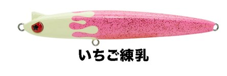
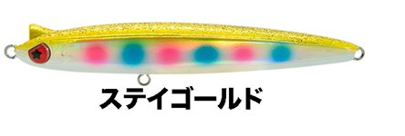
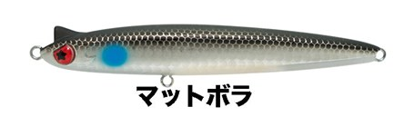
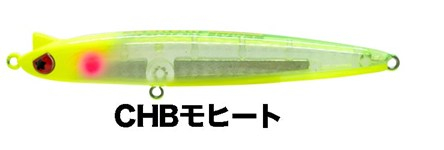

レガリア100LT
（REGALIA100LT）
レガリア100LT（REGALIA100LT）はLEGARE（レガーレ）のシンキングペンシルです。
ノーマルよりスローに、さらにシャローを攻略。主なターゲットはシーバスです。
REGALIA100ノーマルモデル（25g）のバランスを保ったままウェイトを調整し、18gにしたモデル。可変アクションも受け継ぎ、低速ではローリング、流れや巻く速さの変化でスイングに変わって食わせの間を作ります。

画像出典:LEGARE公式HP
スペック
- メーカー
- LEGARE（レガーレ）
- タイプ
- シンキング
- 全長
- 100mm
- 重量
- 18g
- フック
- #6
- アクション
- ヴァリアブルアクション
低速：ローリング／中速：スイング／フリーフォール：水平ローリングフォール） - 価格
- 1,980円
▼今すぐチェック

レガリア100LTの特徴
REGALIA100の可変アクションのまま、ゆっくり沈んで浅く引ける
-
ノーマルより浅いレンジを引ける
ノーマル（25g）のバランスを保ちつつウェイトを18gに調整。より浅いレンジを攻められるようになった。
-
ゆっくり沈む水平ローリングフォール
フォール時は水平の姿勢を保ったままローリングし、ノーマルよりゆっくり沈む。
-
可変アクションと飛距離はそのまま
低速ではローリング、流れや巻く速さの変化でスイングに移行。細身ボディで飛距離と流れの感じやすさも高く、投げた感覚はノーマルのまま。
レガリア100LTの使い方
基本はゆっくりのただ巻きです。ノーマルより沈むのがゆっくりなので、浅い場所でも底を擦らずにスローに引けます。
流れのある場所では、流れに乗せてドリフトさせながら、ローリングとスイングの切り替わりで食わせます。
レガリア100LTの得意な状況
干潟や河川のシャロー、浅いサーフなど、ノーマルの25gでは底に当たってしまう場所が得意です。
ナチュラルな動きなので、警戒心の強い魚やスレた魚にも使いやすいモデルです。
ワンポイント
遠投が必要な時や、深めのレンジまで沈めたい時は25gのノーマル（REGALIA100）に持ち替えましょう。
REGALIAシリーズの使い分け
| モデル | 重さ | 特徴 |
|---|---|---|
| REGALIA100 | 25g | 飛距離が出るノーマルモデル。可変アクション＋水平フォール |
| REGALIA100LT（この記事） | 18g | ノーマルよりスローに沈み、さらに浅いレンジを攻められる |
※数値は公式ページより。どちらも全長100mm・フック#6です。
オススメカラー
レガリア100LTは全11色。そのうち4色を紹介します（画像は公式のカラーチャートより）。

いちご練乳まず1つ選ぶならこの色。ピンク系で視認性が高く、夜にも。

ステイゴールドゴールド系のフラッシングで、濁りの日や朝夕に。

マットボラボラ系のベイトを食べている時に。マットで光りすぎない。

CHBモヒートチャートバックのアピール系。濁りや夜に。
画像出典:LEGARE公式HP
レガリア100LTに似ているルアー
-
 レガリア100
レガーレ
詳細はこちら＞
レガリア100
レガーレ
詳細はこちら＞
同じボディの25gノーマルモデル。飛距離を出したい時に。
-
 シュリペン70
レガーレ
詳細はこちら＞
シュリペン70
レガーレ
詳細はこちら＞
同じレガーレのシンペン。バチ抜けやマイクロベイトの時に。
-
 モウラ105S
ポップシークルー
詳細はこちら＞
モウラ105S
ポップシークルー
詳細はこちら＞
シャローをスローに引けるシンキングペンシル。